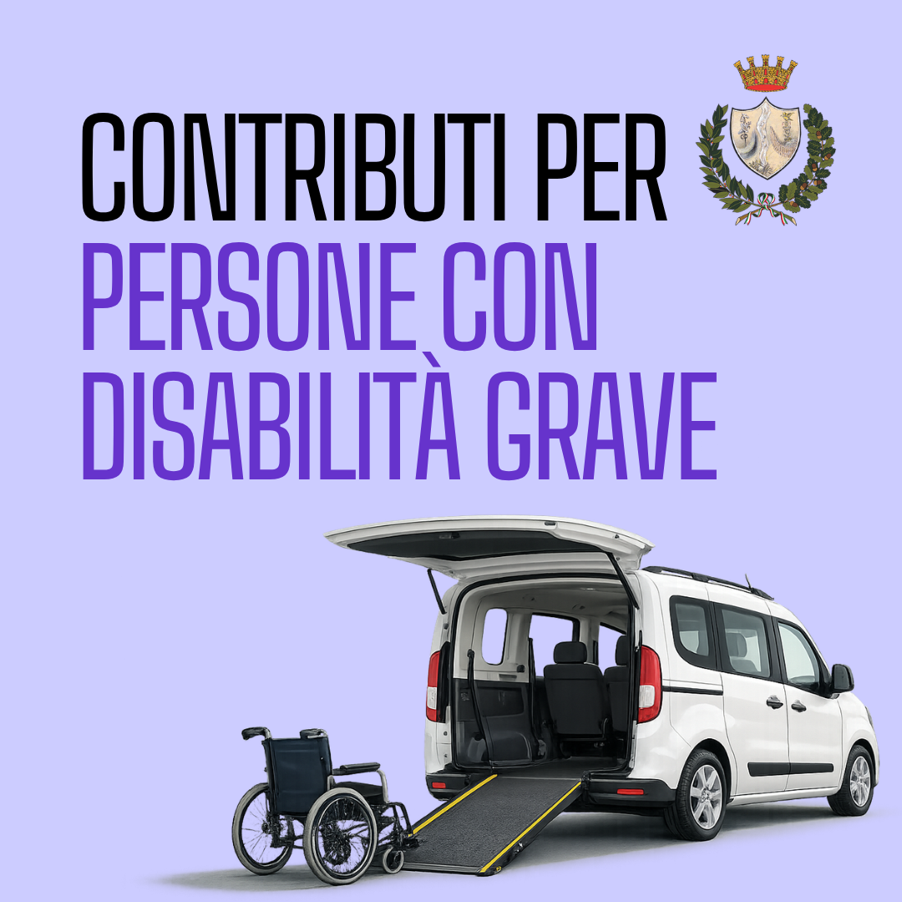
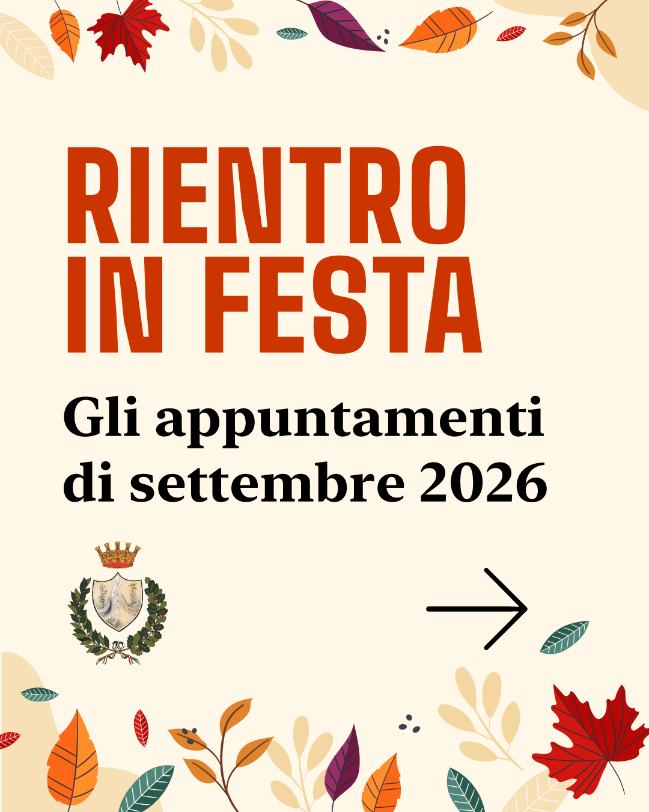
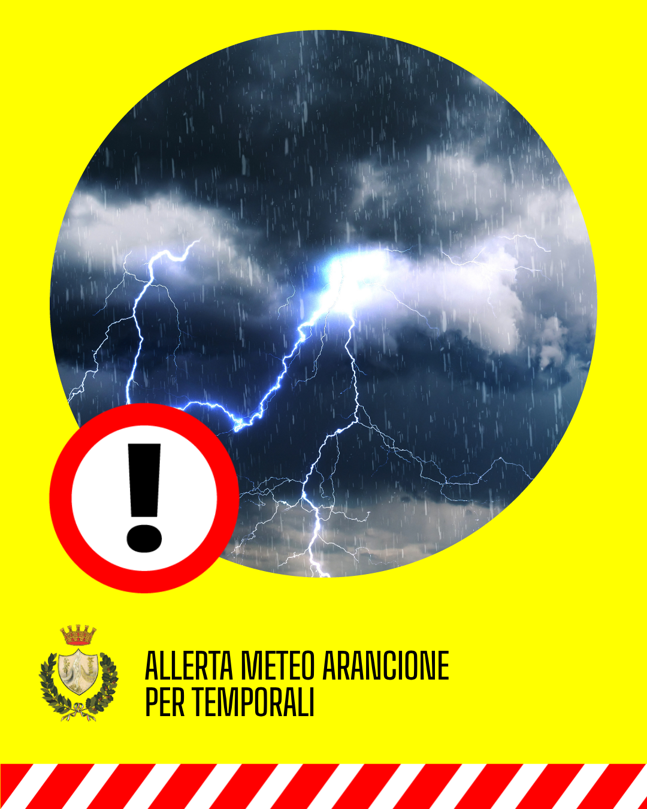

Comunicazione digitale & content
Giulia Agnoletti
Digital Communication | Copywriter | Social Media Manager | Content Creation
Chi sono
"Traduco" concetti complessi in storie chiare, ingaggianti e adatte al target di riferimento. Che si tratti di alleggerire il burocratese di un ente pubblico, dare voce al tono di voce di un brand o creare contenuti digital per un'agenzia, mi muovo facilmente linguaggi differenti.
Nel mio lavoro unisco capacità di scrittura, progettazione dei contenuti, attenzione al contesto e sensibilità verso gli aspetti visivi della comunicazione.
Dalla Content Strategy multicanale all'Account Management tra clienti e team creativi, fino allo sviluppo di Piani Editoriali, Copywriting e contenuti visual veloci con Canva e CapCut: il mio obiettivo è far sì che ogni progetto trovi la parola e il canale giusto per farsi ascoltare.
Progetti
-
Comune di Castenaso
2026Kitchen
Gestione e produzione di contenuti per sito, social e newsletter.
Mi sono occupata di valorizzare la comunicazione dell'ente, assicurando la giusta visibilità e il giusto registro a ogni tipo di informazione: dagli eventi sul territorio agli avvisi istituzionali per la cittadinanza. Ho curato la gestione di piani editoriali multicanale, la scrittura di copy chiari e ingaggianti, la realizzazione di contenuti visual (Canva) e il coordinamento operativo tra l'amministrazione e il team creativo.

CONTENUTO INFORMAZIONE DI SERVIZIO - Aperte le domande per accedere ai contributi dedicati alle persone con disabilità grave (LINK). 
CONTENUTO EVENTO CULTURALE - Anche se agosto sta per finire, a Castenaso la voglia di stare insieme non va in vacanza! (link) 
CONTENUTO ALLERTA METEO - Allerta meteo arancione per temporali (link)
Cosa faccio
- Social media management
- Content strategy
- Copywriting
- Comunicazione istituzionale
- Web content & SEO
- Canva & visual content
- Video editing — CapCut
- ADV base
- Comunicazione eventi
Contatti
Per progetti di comunicazione, collaborazioni o anche solo per scambiare due parole, scrivimi.